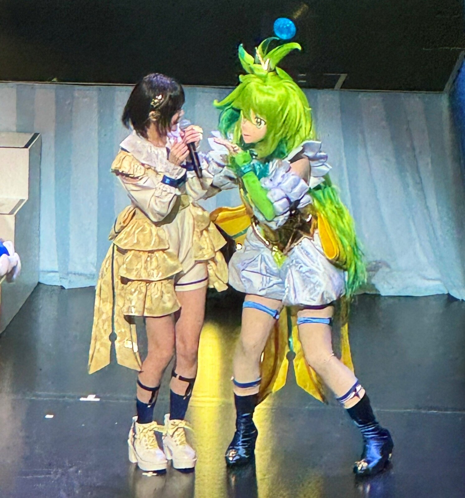

橘杏咲の立ち話もなんですから！ 第18回橘杏咲的“站着聊可说不完！” 第18回
皆さん
各位
あけましておめでとうございます！
新年快乐！
2026年だー！本年もよろしくお願いします🎍✨
2026年到啦——！今年也请大家多多关照🎍✨
午年だ！正午ですね。午前、午後と指標になっている午、地味にすごいやつなんじゃ…🐴
是马年（午年）呀！正午的“午”呢。作为“上午（午前）”“下午（午後）”时间分界标志的“午”，其实是个低调的大佬吧……🐴
毎年干支の意味を調べるのですが、調べるたびに今年は良い年になりそうだな！と思うんですよね。前向きなことしか書いてないからっていうのもあると思いますが。なんとなく「干支」っていう概念が縁起良さそう。
每年我都会去查当年生肖的寓意，每次查完都会觉得“今年一定会是好年呀！”。虽然一部分原因也是网上写的全都是积极正面的话，但总觉得“生肖（干支）”这个概念本身就很吉利呢。
というか、新年ってなんか良いですよね。カウントリセットが入ったみたいな。いや、ゼロにはならないからラップかなぁ。心機一転、今年も頑張るぞーっ！と切り替えられるので、直近にどんな嫌なことがあったって新年は晴々とした気持ちで迎えられる気がします。
话说回来，新年真是美好啊。就好像计数被重置了一样。不对，毕竟不会真的清零，那应该是“计圈（Lap）”吧。因为能让人焕然一新地转换心态喊出“今年也要加油冲呀——！”，所以不管前阵子遇到过什么烦心事，感觉到了新年都能怀着无比晴朗的心情去迎接。
2025年、すごい年だったな。
2025年，真是了不起的一年啊。
怒涛の一年でした。2024年もたくさんの初めてを経験しましたが、またワンランク上の初めてをたくさんたくさん経験させていただきました…。そんな初めてを少しだけ振り返ってみます。
真是波澜壮阔的一年。2024年我也经历了许多“第一次”，而2025年又让我体验了数不清的更高一阶的“第一次”……下面就来稍微回顾一下这些“第一次”吧。
1番はやっぱりお仕事！やっぱり、2025年の初めての大半はお仕事に関することです。まずは、初めてのライブ、それも武道館で。1年前の今頃はソワソワな新年を迎えていた気がします笑
排在第一位的果然还是工作！2025年的“第一次”里，绝大多数都和工作有关。首先是人生第一场演唱会，而且竟然是在日本武道馆。一年前的这个时候，我好像正是怀着忐忑不安的心情迎接新年的呢（笑）。
初めて大きなステージに立ってから早一年、この一年でもう7回も皆さんの前で歌ってました！すごい、、、武道館から横浜アリーナまで、自分が立つなんて想像もしたことがなかった場所ばかりで未だあそこに立ったという自覚が薄いです。少しずつ慣れていくんでしょうか…まだその未来は見えません。
距离我第一次站上大舞台转眼已经过去一年，这一年里我居然已经在大家面前唱了7次歌了！好厉害……从武道馆到横滨体育馆，全都是我以前想都不敢想自己能登上的地方，至今都还有点缺乏“我真的站在过那里”的实感。以后会慢慢习惯的吗……目前还完全看不到那样的未来呢。
2025年最後のステージは、プリオケ2ndイベント「FUTURE SESSION」でした！昼夜と内容が違うイベントで、夜公演では今までで1番多くの曲を披露させていただきました。本当に無事終わってよかった！！今はとってもほっとしています💫
2025年的最后一场舞台，是《Princession Orchestra》2nd活动“FUTURE SESSION”！昼场和夜场的内容各不相同，夜场更是演唱了迄今为止最多数量的歌曲。能顺利落幕真的太好了!! 现在我整个人都大大松了一口气💫
今回のイベント、もちろん楽しみだったのですが、不安があまりにも大きくて。今までは披露する3曲とかを、レッスン以外の時間でも3人で合間を縫って合わせて身に染み込ませていたのですが、今回は少しそれが難しかったのもあって、3人ともずっとソワソワしてたんです笑 前日の夜に3人で不安すぎるよ〜という通話でお互い慰めあってました笑笑
这次的活动，我当然非常期待，但心里实在不安得不得了。以前要唱3首歌左右的时候，我们三个总会在排练课之外的空闲时间抽空一起合练、练到刻进肌肉记忆里；可这次不太容易凑出这样的时间，结果我们三个人一直都坐立难安（笑）。前一天晚上我们三个还打了语音电话互相诉苦“好不安啊〜”，彼此安慰来着（笑笑）。
でも！イベントが始まってしまえばもうそんな不安はすぐに吹き飛びました！！昼公演で、小さなみんなの可愛い声や少し後ろから笑顔で見守ってくださる皆さんの顔を見た瞬間、霧が晴れたみたいな感覚があって！
不过！活动一旦开始，那些不安瞬间就烟消云散了!! 昼场演出时，听到小朋友们可爱的声音、看到稍微靠后一些面带微笑守护着我们的各位观众的脸庞，那一瞬间我感觉仿佛拨云见雾一般豁然开朗！
夜の部もとっても楽しくパフォーマンスできましたっ！！！皆さんのミューチカラに押しつぶされないように気合いマシマシで頑張りました。
夜场也超级开心地完成了表演!!! 为了不被大家扑面而来的“音之力”压倒，我也干劲倍增、全力以赴了。
ソロ曲も、無事に披露できてよかった…皆さんの溢れんばかりのキラキラ、しっかり届きました。「人生は流星だ☆彡」も当たり前の如く心配要員だったのですが、本番はなんだかリラックスしてできた気がします。色々遊べて楽しかったなぁ。
个人单曲也能顺利唱完真是太好了……大家满溢而出的闪耀光芒，我都牢牢收到了。《人生は流星だ☆彡》虽然理所当然地也是让我担心的曲目之一，但正式上场时总觉得自己发挥得挺放松的。在台上玩了好多小互动，真开心呀。
前に葵さんに、「橘のいい意味で力が抜けた喋り方や歌い方をする瞬間があるけどそれ好き」って言ってもらったことをずっと覚えていて。これは、こうするぞ！と意気込んでやるものではなくて、ほぼ私の素というか、リラックスして力をぬいて自由に楽しくやると出るものなんですよ！これがでたらいいなぁ〜と思って、特にこの曲の時はステージに上がった瞬間から考えていたこと全て放棄したのを覚えています。以前お話ししたお芝居の話と似てるのかも…。皆さんからの楽しかった！よかった！が聞けて嬉しかったです。私も楽しかった。
以前葵小姐曾对我说过“我很喜欢橘那种恰到好处的松弛感说话方式和唱腔流露出来的瞬间”，这句话我一直记在心里。那种状态并不是铆足劲想着“我要这样唱！”就能做出来的，反而更接近我最本真的样子，是放松卸力、自由快乐地投入其中时才会自然流露出来的！心想着“要是能把这种状态唱出来就好了〜”，我还记得尤其是唱这首歌时，站上舞台的那一瞬间我就把之前想好的东西全抛到脑后了。这说不定和我之前聊过的演戏心得很相似呢……能听到大家说“好开心！”“太棒了！”，我真的非常高兴。我自己也玩得超开心。
私は基本恥ずかしがり屋、気分屋といった沢山のお店を開いているので！私のことを応援してくれているのかなと思うか方と目が合うと照れてすぐ視線を移動させる癖もあるしファンサらしいファンサもできないキッズですが、照れてんだなと暖かい目で見守ってやってください。
我基本上既是个“害羞屋”（害羞鬼），又是个“随性屋”（情绪化），身上开了好几家“小店”呢！要是和感觉在应援我的观众对上视线，我总习惯害羞地立刻移开目光，也是个做不出像样饭撒的小屁孩，但大家就当成“她在害羞呢”，用温暖的目光包容守护我吧。
後、葵さんと藤本さんには、もう感謝とか好きとか通り越して家族愛です。まぁ二人に言いたいことは二人に直接沢山言うのでね！突然な〜んの脈絡もなく。恥ずかしいし気分屋さんなのでね。とにかーーく！！！本当に良い1日になってよかったぁ🔆
还有，对葵小姐和藤本小姐，我已经超越了感谢和喜欢，完全是家人般的爱了。嘛，想对她们说的话我都会直接说一大堆的！经常毫无征兆、没头没脑地突然表白。毕竟我又容易害羞又随性嘛。总——之!!! 那一天真的成为了无比美好的一天，太好啦🔆
イベントの話で盛り上がってしまいましたが、ステージに立つというのは2025年の初めて一覧でかなり大きなトピックでしたね。ステージ以外でも初めてのメインキャラに主演、OPやEDの歌唱など本当に色々なことを一年で経験させていただきました。大好きなディズニー作品にも出演させていただいたりもしましたね。「ズートピア2」皆さん観ましたか！？最高だった、最高だった…。
光顾着聊活动一下子太兴奋了，不过“站上舞台”确实是2025年“第一次清单”里非常重磅的一大主题呢。除了舞台之外，还有第一次担任主要角色和主演、演唱OP与ED等等，这一年里真的经历了数不胜数的事情。甚至还参演了我最爱的迪士尼作品呢！《疯狂动物城2》大家都看了吗！？太棒了，真的太棒了……
また一つ、遠くに描いていた夢が叶いました。こんな幸せあっていいのだろうか…。いや本当に、たまに最近の目まぐるしい日々の中で一瞬立ち止まって思うのですが、こんな人生になるなんて思ってなかったなぁと。感じたことない初めての感情にも沢山出会ってます。
又有一个曾经遥不可及的梦想实现了。世上真的可以有这么幸福的事吗……说真的，在最近令人目不暇接的日子里，我偶尔会停下脚步一瞬，感叹自己从未想过人生会变成这样。我也邂逅了许多从未体会过的全新情感。
もちろん、自分に良い影響を与えない感情にも出会いましたが、それも全部自分の糧になっているような気がしてます。その瞬間は辛くても時間が経てば経験値アップの素材と化してますから！
当然，我也遇到过对自己没什么好影响的负面情绪，但总觉得那些也全都会化作自己的养分。哪怕当下很煎熬，只要时间流逝，它们全都会变成提升经验值的素材嘛！
2026年もきっとはちゃめちゃな年になりそうな予感がしていますが、きっと大丈夫だと思います。経験値集め楽しみつつがんばるぞ〜。でも、ぽきっとはならないように。労わっていきます。よしよし
我预感2026年也一定会是热闹纷乱、风风火火的一年，但肯定没问题的。我要一边享受刷经验值的乐趣一边加油冲〜！不过，也要注意别把自己累到“咔嚓”折断了。要好好疼爱自己。摸摸头。

FUTURE SESSION昼の部の撮影OKタイムで友人が撮ってくれた📸です。
这是在 FUTURE SESSION 昼场允许拍照的环节里，朋友帮我拍下的照片📸。
ミーティアに投げキッスされてきゃっきゃしてる私。
被 Meteor 飞吻之后乐得手舞足蹈的我。
さて、結構つらつらお話ししてる気がしますが、去年もやった今年の抱負について…叶えたいことは口に出してなんぼって各所のえらい人がよく言ってるし。自分にプレッシャーかけていきますか。
好啦，感觉已经絮絮叨叨聊了不少，接下来就照例说说去年也定过的新年抱负吧……各路大佬都常说“想实现的事就是要大声说出来才管用”嘛。那我就来给自己上点压力吧。
ちなみにコラムで掲げていた2025年の目標は「スキップで走り抜ける！！」でした。「2025年も楽しくて時間が経つのがあっという間！となるように駆け抜けたい」と言っていましたが、その言葉の通り楽しすぎて一瞬の一年でした。きっと私のコラムを毎月読んでくださっている皆さんには伝わっているはず。
顺带一提，我去年在专栏里立下的2025年目标是“蹦跳着一路冲过去！！”。当时我还说过“希望2025年也能充实快乐到让人觉得‘一眨眼就过去了！’，就这样一路飞奔下去”，结果正如我所说，这一年开心得仿佛一瞬间就过去了。每个月都在追我专栏的大家，一定都能感受到吧。
それを踏まえて2026年の抱負はズバリ…
在此基础上，我2026年的抱负正是……
「おさめる」
《修成、收官与收获》
で！！修める、納める、収める。色々なおさめるがありますが、本当に色々な意味でおさめたいんです。成功や勝利を収めるといったキラキラしたおさめもしたいですし、学業も。ねぇ。まずは残り1ヶ月ほど戦って、絶対に勝って、来年という決勝の一年で無事勝利を収めて修めたいです。何がとは言いませんが。怖いので。
就是这个!! “修める”（修成学业）、“納める”（圆满收官）、“収める”（收获成果）。“おさめる”有着各种各样的写法和含义，而我是真的想在各种意义上都好好实现它呀。既想收获成功与胜利这种闪闪发光的成果，学业方面也是嘛，你懂的。首先得把剩下的这大约一个月打完，一定要赢下来，然后在明年这“总决赛的一年”里顺利赢得胜利、圆满修成。具体指什么我就不明说了，怕立 flag 怪吓人的。
絶対ヒーヒー言っている未来が見えているのですが、とりあえずベースは2025年と同じくスキップで毎日駆け抜けていきたいと思います。がんばるぞ。本当にがんばる。
虽然我已经预见到未来自己肯定会累得气喘吁吁、叫苦连天，但总体基调还是想和2025年一样，每天蹦蹦跳跳地一路飞奔下去。加油呀！我真的要好好加油！
皆さんも一緒に頑張って最高の一年にしましょうね！
大家也一起加油，共同创造最棒的一年吧！
最後に！1月から放送されるアニメについてっ！
最后！来聊聊1月起开播的动画们！
まず、「カヤちゃんはコワくない」が1/11(日)17:30から放送開始です！カヤちゃんの声を担当させていただきます！まさかの日曜日の夕方放送。しっかりコワいです。面白くて可愛くてコワいです。そして、EDテーマを朔雀さん&導凰さんが担当されるのですが、『Playmour feat. カヤちゃん』と、なんとカヤちゃんも歌っております！
首先是《神八小妹不可怕》，将于1月11日（周日）17:30起开播！我将为神八酱配音！没想到居然是周日傍晚档播出。这部作品可是货真价实地挺吓人的哦。既有趣又可爱，还很吓人。而且片尾曲由朔雀小姐&导凰小姐演唱，曲名为《Playmour feat. カヤちゃん》，神八酱居然也一起献唱了！
カヤちゃんで歌う機会があるとは！とそれだけでも驚いていたのですが、なんと、ヰ世界情緒さんのE.P.『幻視録』に、OPテーマ『まぼろしの行方』をアコースティックバージョンで一緒に歌わせていただいたものが収録されます！そちらも是非チェックしていただけると嬉しいです✨楽しみ楽しみ
光是以神八酱的身份有唱歌的机会就已经让我很吃惊了，没想到在ヰ世界情绪小姐的EP《幻視録》中，还收录了我与她共同合唱的片头曲《まぼろしの行方》不插电版本！如果大家也能去听一听的话我会超开心的✨好期待好期待！
そしてそして、「貴族転生 ~恵まれた生まれから最強の力を得る~」が1/7(水)から放送開始です！歌い手の少女、アリーチェの声を担当させていただきます！超絶最強ノア様による異世界統治ファンタジーです！ノア様本当にすごいです。視聴後はみんなきっとノア様すごい…になります。それから、歌い手の女の子…歌…そうですなんと、EDテーマ『You’ll Be In My Heart〜そばに〜』をアリーチェ役として歌わせていただきました！
接着接着，《贵族转生～得天眷顾一出生就获得最强力量～》将于1月7日（周三）起开播！我将为歌姬少女阿丽切配音！这是一部由超级无敌最强的诺亚大人演绎的异世界治国奇幻故事！诺亚大人真的太厉害了。看完之后大家一定会忍不住感叹“诺亚大人好厉害……”的。然后呢，歌姬少女……唱歌……没错！我居然以阿丽切的身份演唱了片尾曲《You’ll Be In My Heart〜そばに〜》！
初めて一人で歌うエンディング主題歌、RECドキドキでした。是非こちらも楽しみにしていただけると嬉しいです。
这是我人生第一次独自演唱片尾主题曲，录音的时候心跳个不停。也请大家务必期待这首歌哦！
さらに、プリオケも！第4クール目に突入します。遂に…という感じがしますね。早すぎるよ。寂しいなぁ。第3クールはお話しの雰囲気が少し変わって、少しずつアリスピアの謎が解けてきましたね。新曲もどんどこ出ていて、飽きさせないんだから本当にっ。。。ラストスパート、1話1話噛み締めます。イベントも沢山ありますし、まだまだ一緒に楽しんでいきまよ〜ね！
此外，《Princession Orchestra》也即将步入第4季度啦！总有种“终于到了这个时候啊……”的感觉呢。实在太快了啦，好舍不得呀。第3季度的剧情氛围稍微发生了些变化，爱丽丝琵亚的谜团也一点点揭开了呢。新歌还一首接一首不断登场，真是完全不给人腻的机会呀……最后冲刺阶段，我会细细品味每一集！活动也还有好多场，接下来也一起尽情享受吧〜！
終わりかと思えば、そうです。あの子がいました。なぜか(?)「ばっどがーる」の再々放送が決定したとのことで！連続3クールじゃないか！！おもしろすぎます。天狼群としてはシングル発売やワンマンライブの開催が決定していたりと、落ち着くどころかもりに盛り上がっているのですが、そんな中アニメもダッシュで並走しています。すごい。再々放送もチェックしてくれよなっ
本以为到这里就结束了吧，没错，还有那家伙呢！不知为何（？）《坏女孩》居然决定再次重播了！这不就是连续播三个季度了吗!! 太好笑了。作为“天狼群”，我们不仅决定了发售单曲、举办专场演唱会，热度非但没有降下来反而越来越火爆，而动画也在一旁全速并跑。太厉害了。再次重播也请大家一定要看哦！
よっし！沢山嬉しいお知らせができた〜！！1月クールも楽しみがいっぱいです！！地味に全ての作品のEDテーマに関わらせていただいていて…こんなことって…。信じられないし、恐れ多すぎるのですが、とにかく嬉しいな嬉しいな。幸せです。
好耶！把这么多开心的好消息都通知到大家啦〜!! 1月档期也有满满的期待呢!! 仔细一算，我居然悄悄参与了所有这些作品的片尾曲……怎么会有这种事……虽然觉得难以置信又受宠若惊，但总之就是好开心、好开心呀。太幸福了。
全ての暖かい感情を胸に、寒い冬を乗り越えるぞ！！頑張るぞ！頑張りましょうね！！
怀揣着所有温暖的情感，熬过这个寒冷的冬天吧!! 我要加油！大家一起加油吧!!
ここまで読んでくださり、ありがとうございました！
非常感谢大家一直读到这里！
絶対に良い年にしましょうね。今読んでくださっているあなた、一緒に最高の一年にするんだからね！改めて、今年もよろしくお願いします！
一定要把今年过成美好的一年哦。此刻正在读这篇专栏的你，我们要一起度过最棒的一年呀！再次祝愿，今年也请多多关照！
テーマや質問、感想など、引き続きお待ちしております！
专栏主题、提问以及读后感等等，也继续欢迎大家踊跃投稿！
ではっ🌟
那么下回见🌟
橘さんに質問！向橘小姐提问！
Q：軽音楽部時代の色んなエピソードをお聞きしたいです！こんな楽曲カバーしてたよ〜とか、使ってたギターの種類なんかも気になります。（千葉県・えーす）
问：很想听您分享轻音部时期的各种趣事！比如翻唱演奏过哪些曲子、当年用的吉他是什么型号之类的，我都很好奇。（千叶县·えーす）
えーすさん、ご質問ありがとうございます！
えーす，感谢你的提问！
うちの軽音部はけっこうゆるゆるでまったりやってました！私はギタード初心者で始めたので、有名な楽器屋さんで初心者セットたるものを購入しました！種類とかは分からないのですが、ギターのボディが木の素材の可愛いやつ！
我们学校的轻音部气氛相当轻松佛系，平时都是悠哉悠哉地活动！我当时是从零开始的吉他纯新手，就在一家有名的乐器店买了所谓的新手套装！具体型号什么的我也搞不太懂，只记得琴身是原木材质、非常可爱的一把吉他！
1年生の頃からシャッフルバンドと言って中高生学年問わずシャッフルして組んで演奏すると言う行事がありまして。それが印象深いですね。
从一年级起，社团里就有一项叫作“随机重组乐队”的活动，不分初中高中和年级把大家打乱重新组队演出。那个活动让我印象非常深刻呢。
シャッフルバンドだと「告白予行練習」をやったのが懐かしいです…。ちょっとだけ恥ずかしかった思い出。通常のバンドだと、卒業ライブでやった「GIVE ME FIVE!」や「Hero too」が思い出深いです。部活終わっちゃうんだって言う寂しさが凄かったです。
在随机乐队里演过《告白予行練習》，现在想起来好怀念呀……是一段稍微有点让人害羞的回忆。至于固定乐队的话，毕业演出上弹唱的《GIVE ME FIVE!》和《Hero too》最让我难忘。当时一想到社团活动就要画上句号了，心里涌上来的不舍真的特别强烈。
あとはコロナ禍でオリジナルmvを作成した「僕らは今日も車の中」制服でたくさん動画撮ったな、、、青春詰まってます。あれはおばあちゃんになって見たら泣いちゃう。
还有疫情期间大家一起拍了原创MV的《僕らは今日も車の中》，穿着校服录了好多视频呢……里面装满了青春。那个视频要等我变成老奶奶再翻出来看，肯定会感动到哭出来吧。
他にも色々演奏したんですけど長くなるのでおいおい…
其实还演奏过好多别的曲子，不过展开讲就太长了，之后有机会再慢慢聊吧……
またなにかやりたいなー。
好想找机会再玩点什么乐队活动呀——。